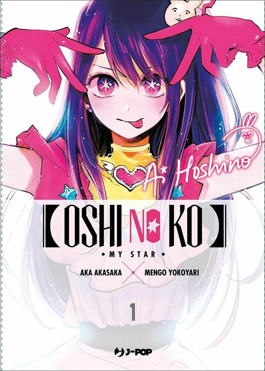

•
Dans le monde du spectacle le mensonge est une arme•
Le docteur Gorô est obstétricien dans un hôpital de campagne. Il est loin du monde de paillettes dans lequel évolue Aï Hoshino, une chanteuse au succès grandissant dont il est un "fan absolu".
Ces deux-là vont se rencontrer dans des circonstances exceptionnelles qui changeront leur vie à jamais !
Une oeuvre-choc dans laquelle le duo Aka Akasaka (Auteur de Kaguya-Sama) et Mengo Yokoyari nous offre un regard inédit sur le "monde du spectacte" !